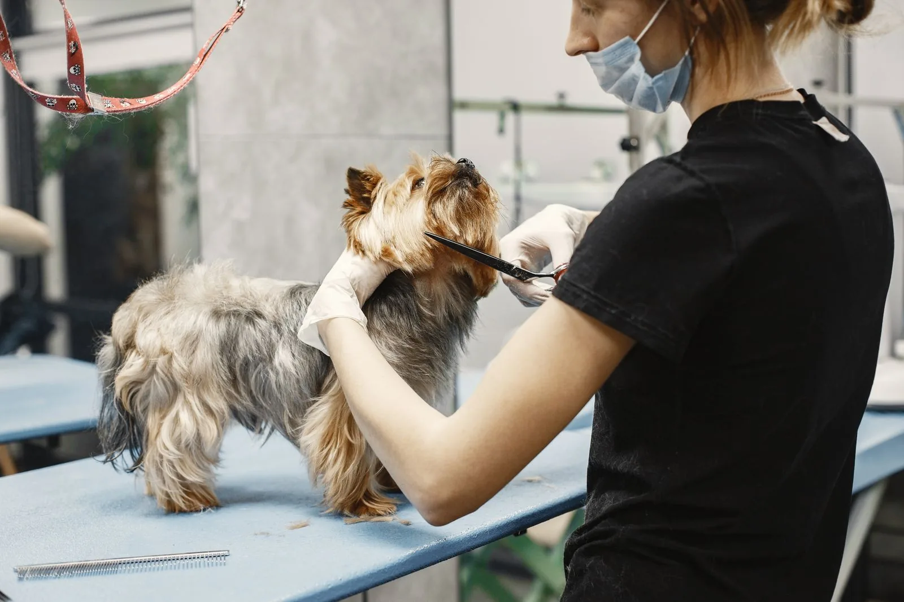
Most bookedFull groom
Bath, brush-out, breed-style cut and tidy-up — finished with the precision owners notice. Not a single hair missed.
Bath, cut & finish includedA calm, welcoming grooming salon on Portishead High Street. Natural & vegan products, fully insured and qualified — and every breed and size is welcome.
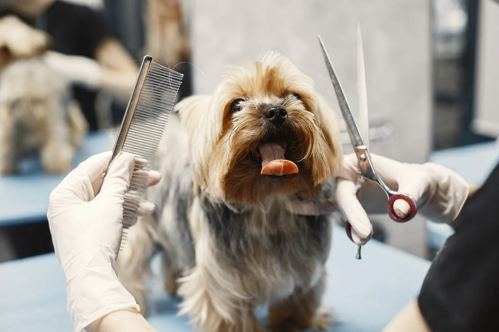
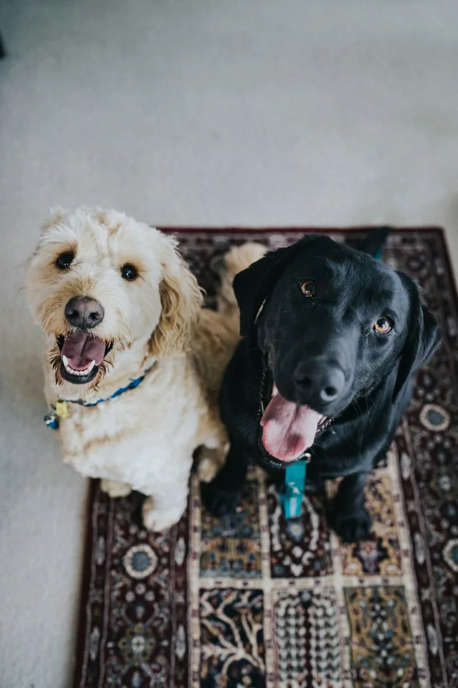
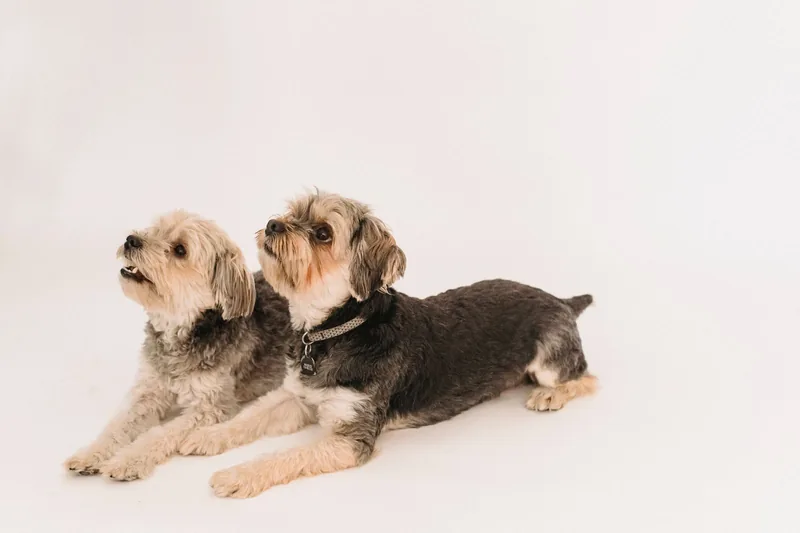
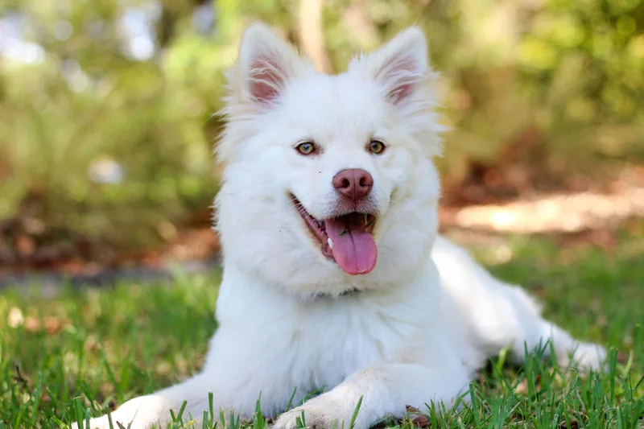
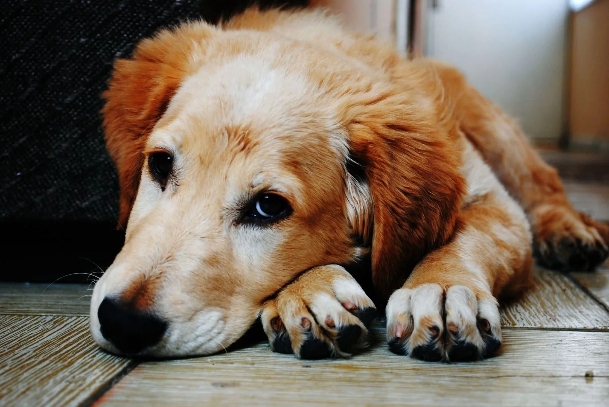
“We are a dog grooming salon on Portishead high street. Our aim is to create a welcoming, relaxed environment to ensure all dogs leave with a wagging tail.”
That relaxed start matters. Dogs settle in, get to know the groomers, and the groom happens at their pace — never rushed, never forced. The salon’s groomers, Ella and Erin, are the names owners mention again and again in reviews: for careful cuts, for teeth that look like a puppy’s again, and for first grooms handled so gently that owners get a text halfway through.
From a full groom to a quick nail trim — every visit is unhurried, gentle, and finished with a wagging tail.

Most bookedBath, brush-out, breed-style cut and tidy-up — finished with the precision owners notice. Not a single hair missed.
Bath, cut & finish includedA warm wash with natural, vegan products — kind to sensitive skin and followed by a gentle blow-dry and brush.
Natural & vegan products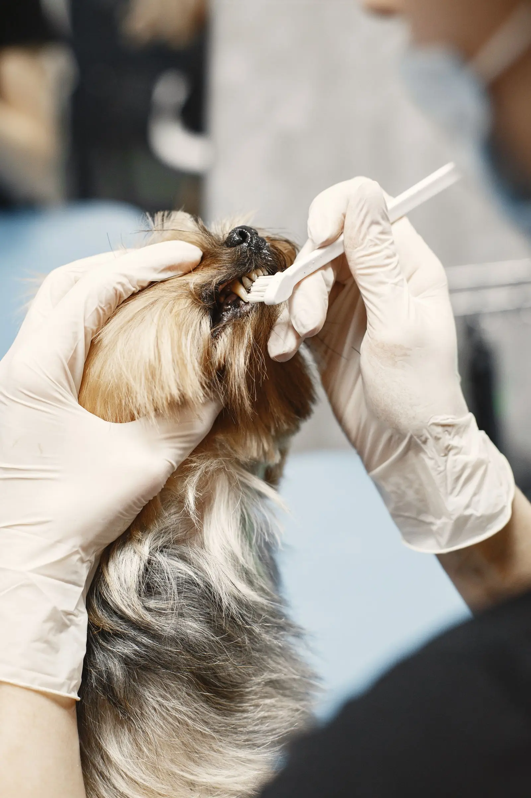
Gentle teeth cleaning that owners say leaves teeth looking like a puppy’s again — not a speck of plaque in sight.
Ask about it at booking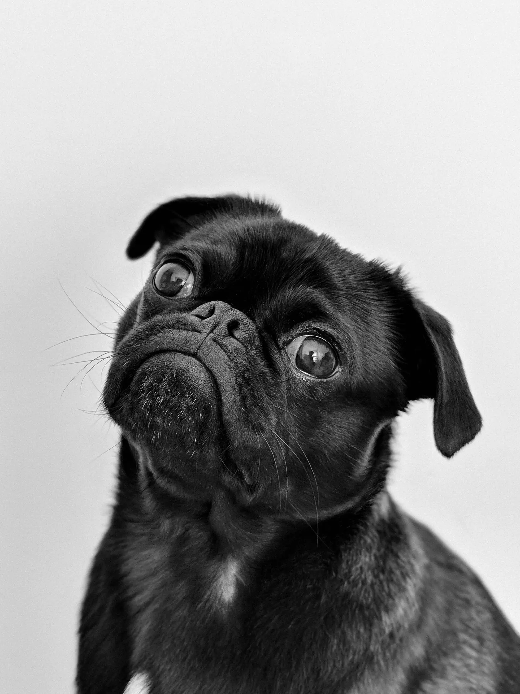
Quick, calm nail trims — even for nervous dogs. Owners tell us their dogs relax and it’s done within minutes.
Done within minutes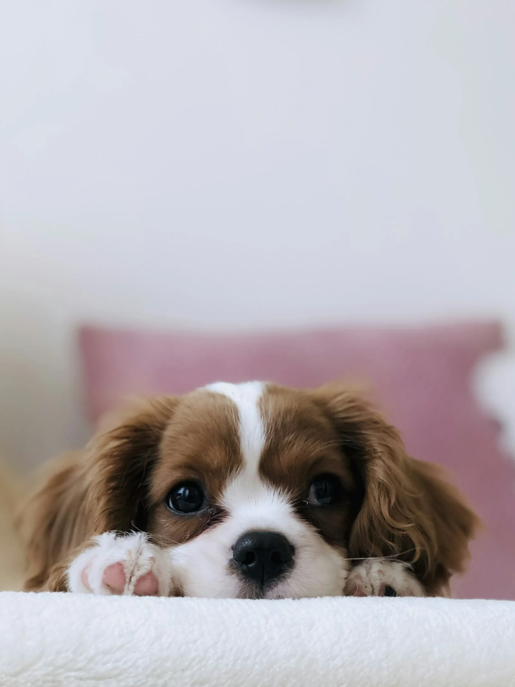
Extra care for itchy, sensitive skin. Ella’s advice and skin treatments have helped dogs stop licking sore paws.
Sensitive-skin friendly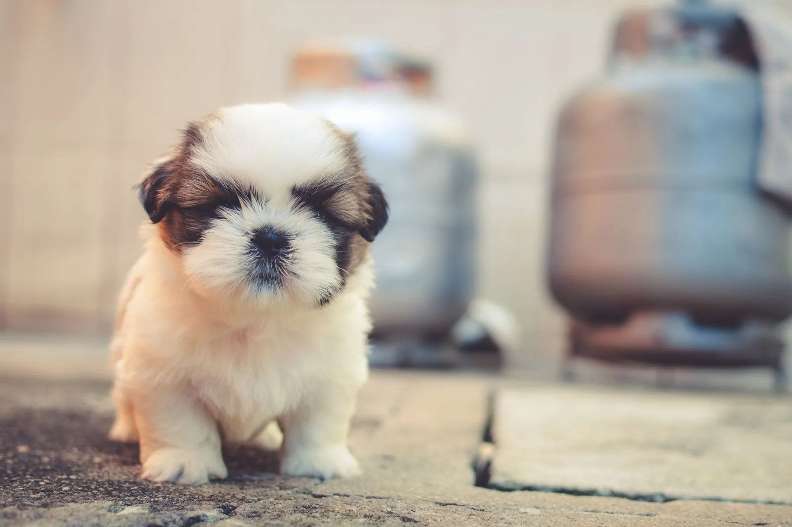
A slow, gentle first visit for puppies — a short meet, a little bath, a little trim, and a text to let you know they’re okay.
Gentle first visitPrices on request — every coat is different, so your price is confirmed when you book. Call or email for a quote.
Tap any photo to see it up close.
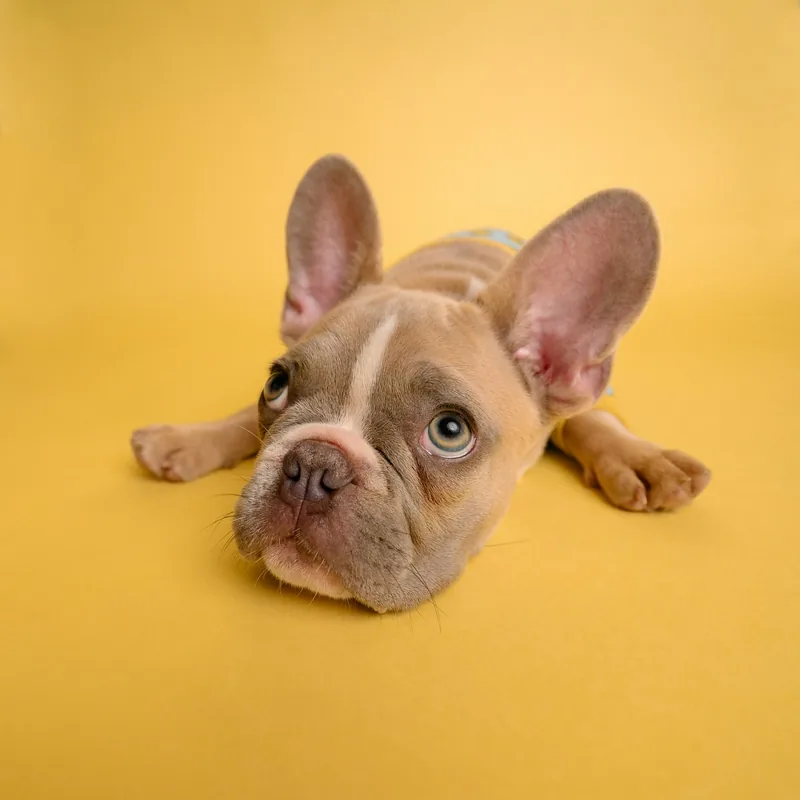
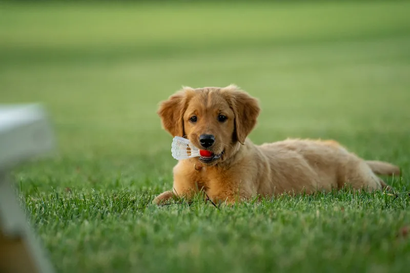
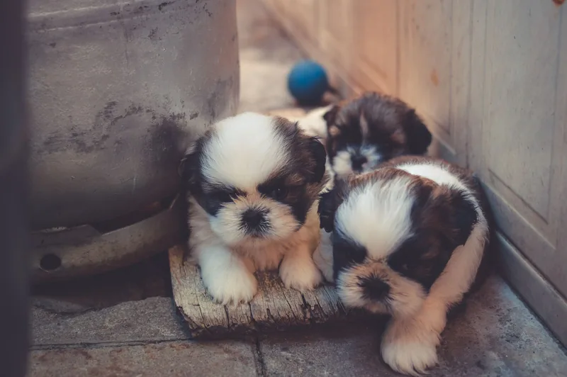
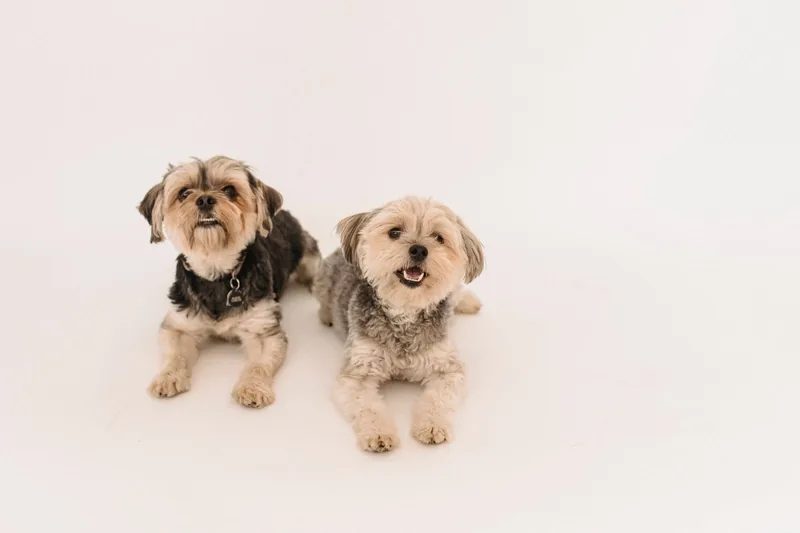
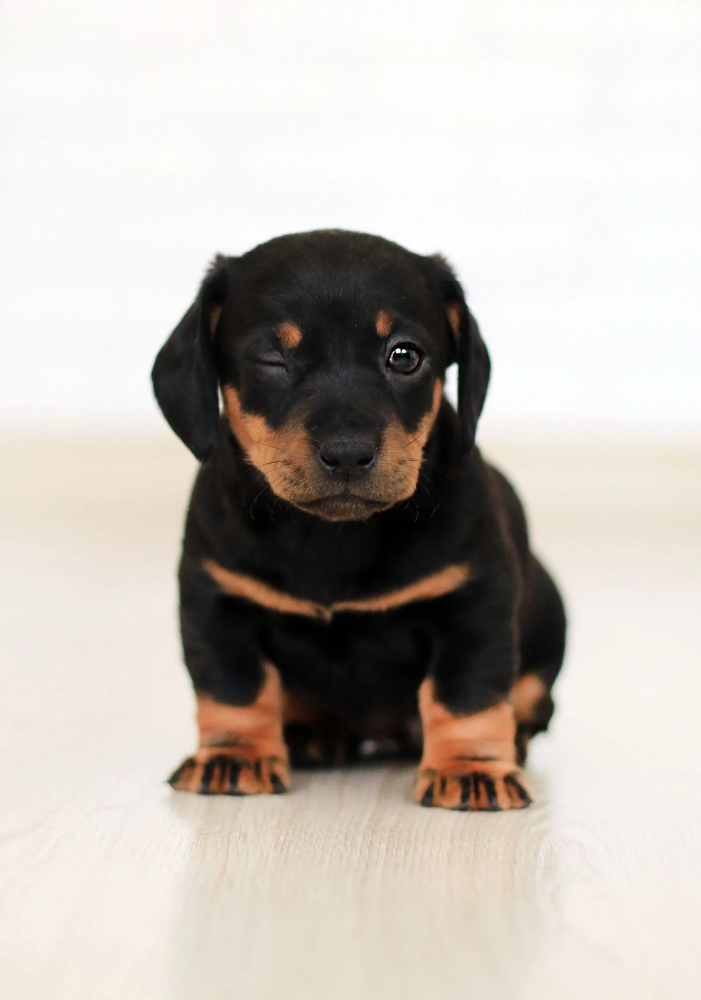
A puppy’s first groom sets the tone for every groom after it. So we take our time — and we keep you in the loop while we do.
Four easy steps — and your dog does the hard part (being adorable).
Call, email, or book online via Setmore. Tell us your dog’s breed, coat and temperament.
We talk through the cut, the coat and anything sensitive — skin, nerves, teeth, nails.
A warm wash with natural products, a careful brush-out, and a precise, unhurried trim.
Your dog goes home clean, tidy and happy — and we’ll tell you how they got on.
Every quote below is from a public Google review, shown on the salon’s booking page.
“Perfect from start to finish, I’m so impressed with the level of skill and the precision to attention of detail. My boy looked like a new dog with his new cut and not a single hair was missed.”
“Ella did a fantastic job cleaning my dogs teeth… His teeth look like he’s a puppy again with not a single speck of plaque in sight.”
Sophie’s cavapoo had his first groom with Erin — “she even text me half way through to let me know he was okay.”
“Did a fantastic wash on my German Shepard, highly recommend.”
Pop in, call or email — we’re right in the heart of the High Street.
| Monday | 8:00 AM – 4:00 PM |
| Tuesday | 8:00 AM – 4:00 PM |
| Wednesday | 8:00 AM – 4:00 PM |
| Thursday | 8:00 AM – 4:00 PM |
| Friday | 8:00 AM – 7:00 PM |
| Saturday | Closed |
| Sunday | Closed |
Yes — all breeds and sizes are welcome, from tiny cavapoos to German Shepherds.
Only natural and vegan products — the best we can find for your pup’s skin, including sensitive skin.
Yes, we’re fully insured and qualified, with a huge passion for grooming.
Every coat is different, so prices are confirmed when you book — call or email us for a quote and we’ll be happy to help.
Absolutely. First grooms are taken slowly — a short meet, a gentle bath, a quiet trim — and we’ll text you halfway through to let you know they’re okay.
We’re at 48b High Street, Portishead, Bristol BS20 6EL. We’re open Monday to Thursday 8:00 AM – 4:00 PM and Friday 8:00 AM – 7:00 PM, and closed on Saturdays and Sundays.
Tell us a little about your dog and we’ll confirm your appointment by phone or email.